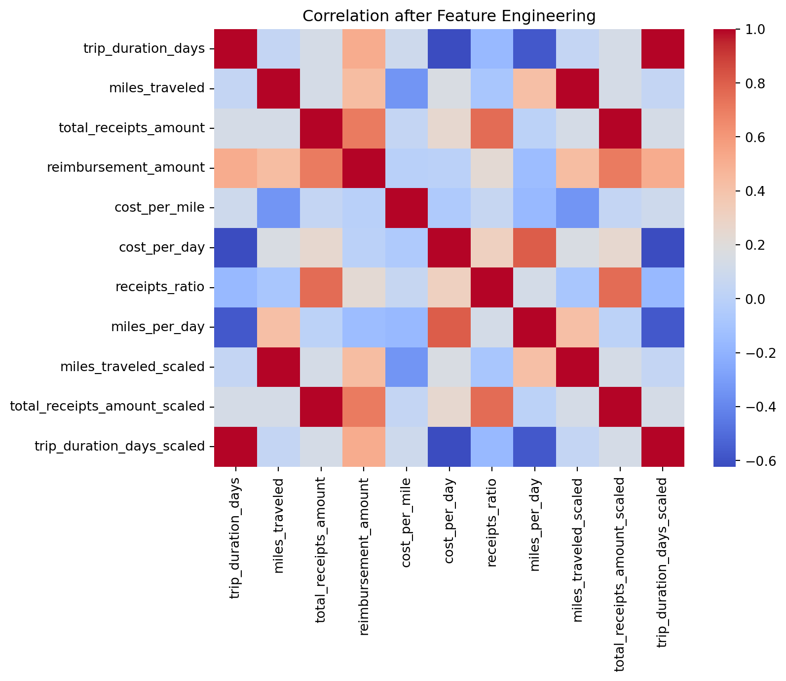

Harriet O’Brien, Vy Tran, Saniyah Khan, Rehinatu Usman
1 Introduction
This notebook focuses on creating the engineered features that will be used in the modeling step. Building on the patterns identified in the EDA, the goal here is to generate additional variables that help the model capture cost behavior more effectively.
We will create new features (e.g., cost_per_mile, cost_per_day, receipts_ratio), normalize the data if needed, and document the transformations clearly.
2 Basic Set Up
import pandas as pdimport numpy as npfrom sklearn.preprocessing import StandardScaler, MinMaxScaler# Load datasetdf = pd.read_json("../data/public_cases.json")# Normalize JSON structure (same as in 01_eda)features = pd.json_normalize(df["input"])features["reimbursement_amount"] = df["expected_output"]features.head()
There were several derived features created to capture spending patterns per unit distance and per trip day. These ratios help quantify how mileage and receipts scale with reimbursements, which should give ML models more structure to learn from.
No missing values were introduced during feature calculation.
Polynomial features were not included because tree-based models naturally capture nonlinear patterns and threshold behaviors without requiring explicit polynomial transformations.
5 Normalize or Scale if Needed
scaler = StandardScaler()scaled_cols = ["miles_traveled", "total_receipts_amount", "trip_duration_days"]features_scaled = scaler.fit_transform(features[scaled_cols])scaled_df = pd.DataFrame(features_scaled, columns=[col +"_scaled"for col in scaled_cols])features = pd.concat([features, scaled_df], axis=1)features.head()
trip_duration_days
miles_traveled
total_receipts_amount
reimbursement_amount
cost_per_mile
cost_per_day
receipts_ratio
miles_per_day
miles_traveled_scaled
total_receipts_amount_scaled
trip_duration_days_scaled
0
3
93.0
1.42
364.51
3.919462
121.503333
0.003896
31.000000
-1.436568
-1.629179
-1.030280
1
1
55.0
3.60
126.06
2.292000
126.060000
0.028558
55.000000
-1.544792
-1.626243
-1.539941
2
1
47.0
17.97
128.91
2.742766
128.910000
0.139400
47.000000
-1.567576
-1.606889
-1.539941
3
2
13.0
4.67
203.52
15.655385
101.760000
0.022946
6.500000
-1.664408
-1.624801
-1.285111
4
3
88.0
5.78
380.37
4.322386
126.790000
0.015196
29.333333
-1.450808
-1.623306
-1.030280
Scaled mileage, receipts, and duration to help models that are sensitive to feature magnitudes (e.g., linear regression, ridge).
import seaborn as snsimport matplotlib.pyplot as pltplt.figure(figsize=(8,6))sns.heatmap(features.corr(), annot=False, cmap="coolwarm")plt.title("Correlation after Feature Engineering")plt.show()

New features correlate with reimbursement in expected ways, confirming they capture useful patterns.
Exporting the processed feature dataset ensures that every notebook, modeling and interpertability, uses the exact same cleaned and engineered inputs. This keeps the workflow consistent and reproducible, and prepares the data for the next step in model development.